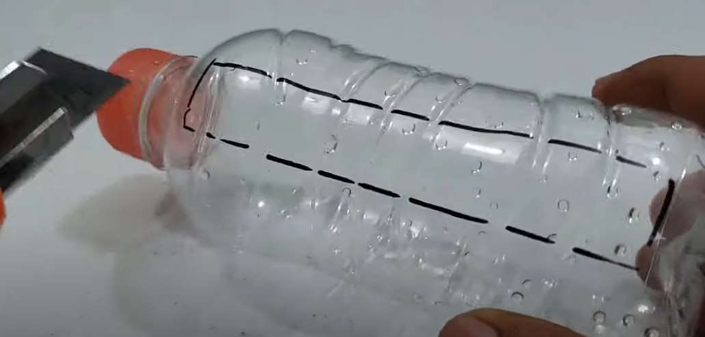

Generador de Burbujas
Materiales
.Botella 330 ML .Carton .Cd .Cautin .Tapa de botella .Silicon .Tornillo .Motorreductor de doble eje .Motor DC de 3v .Helice .Interruptor .Baterias .Portapilas
Video de referencia
Pasos para elaborarlo
Primero hacer un corte en la parte superior de la botella de 10x5cm
Cortar un cuadrado de 18x18cm para que sea la base (puede sustituirlo por una base de madera o un plato plastico), 4 rectangulos de 18x6.5cm,dos rectangulos de 6.5x6.5cm y pegarlos de manera que quede como en la imagen.

Con ayuda de un cautin o taladro realizarle agujeros a todo el contorno del CD y pegarle una tapa de botella en el medio.

Realizar las conexiones de ambos motores tanto positivas como negativas y pegar el motor de doble eje a la base.

Luego conectar ambas conexiones de los motores al interuptor y a la bateria.

Hacer una torre con cuadrados de carton para pegar el motor a la altura del CD y colocarle la helice.


Por ultimo revisar que todo el circuito funcione de manera correcta
Colocar liquido de burbujas (puede hacerlo por usted mismo) y ya estaria listo el generador de burbujas.